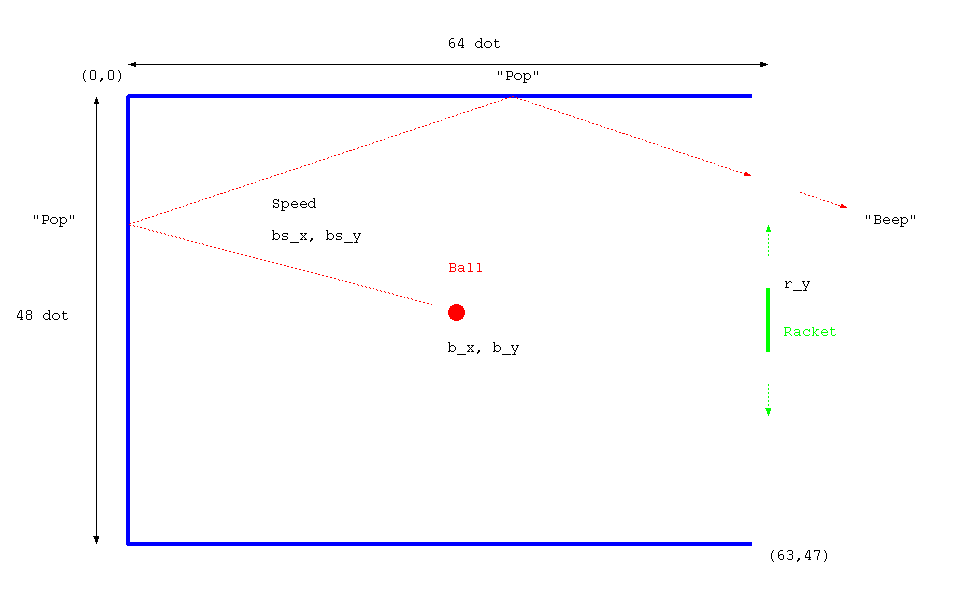

<!-- header -->

<!-- panorama -->

<p></p>	

<!-- schematic -->

<!-- layout -->

<nav>
	<ul>
	<li><a href="../../../parts/stm32l052k8t/description.html" target="_blank">MCU (STM32L052K8T)</a></li>
	<li><a href="../../../parts/oled/description.html" target="_blank">OLED</a></li>
	<li><a href="../../../parts/ec12e2420801/description.html" target="_blank">Rotary encoder (EC12E2420801)</a></li>
	<li><a href="../../../parts/lm4861/description.html" target="_blank">Audio power amplifier (LM4861)</a></li>
	</ul>
</nav>

<!-- footer -->


